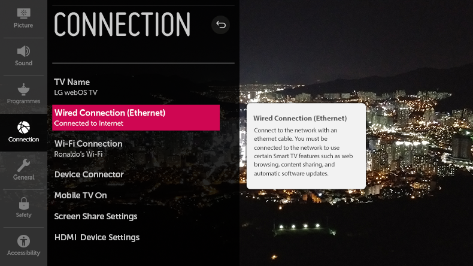

Uso de Ayuda de Ajustes

 General
Configuración adicional
Ayuda para la configuración
General
Configuración adicional
Ayuda para la configuración
Si selecciona los menús de ajuste, verá consejos sobre ellos. Active / desactive el cuadro de descripción en Ajustes.
